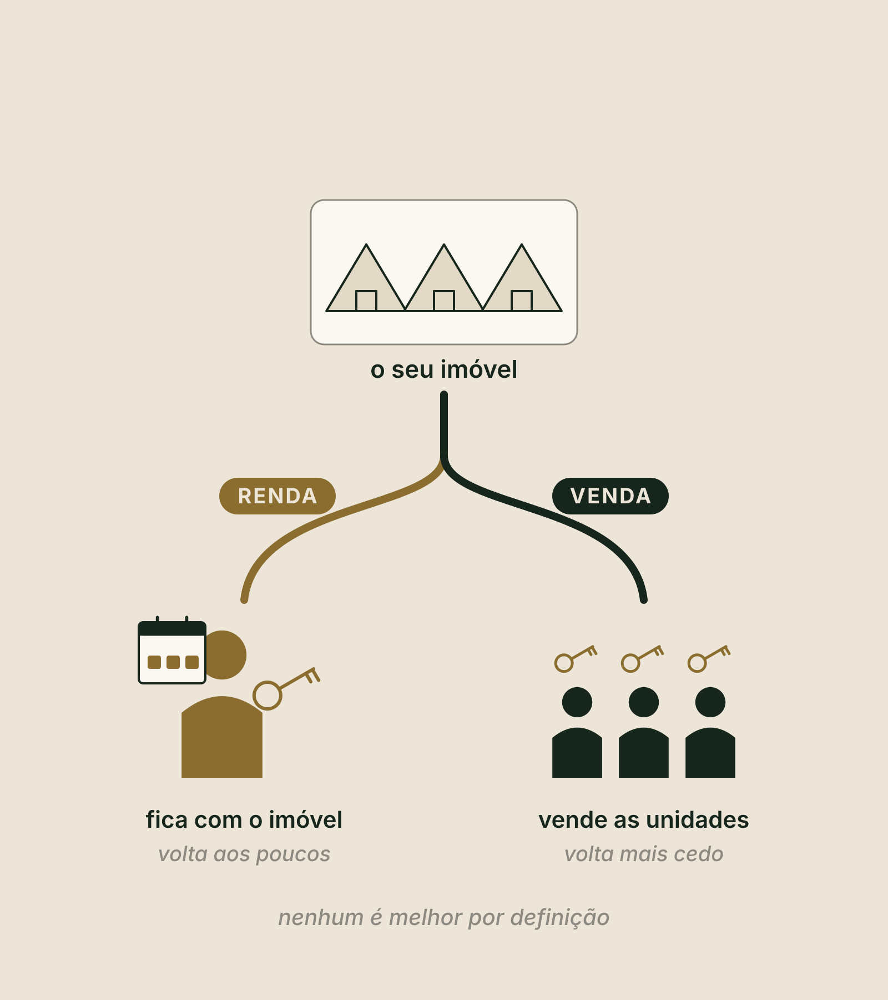

Método Zion · Etapa 2 · Desenhar o produto
Pilar 4
Modelo de negócio
Renda, venda ou os dois. Você sai sabendo como o seu projeto ganha dinheiro, e com a página 4 do seu Dossiê: o Modelo de Negócio.
O que você vai fazer aqui
Assistir, responder e sair com a página 4
Assistir
Dois vídeos curtos, um por bloco: o modelo de renda e o modelo de venda. E um vídeo extra, o mapa dos modelos.
Responder
Uma pergunta por tela, logo depois do trecho que a explica. Cada resposta fica salva na hora, neste aparelho.
Sair com o PDF
No fim, a ferramenta abre aqui dentro, já com as suas respostas. Você gera o Modelo de Negócio em PDF: a página 4 do Dossiê.
DicaTenha à mão a sua Ficha do Mercado (Pilar 2) e a sua Ficha do Produto (Pilar 3), e uma calculadora. Use os botões lá embaixo, ou as setas do teclado, para avançar.
Antes de começar · sem voltar às páginas
Três perguntas do Pilar 3
No Pilar 3 você decidiu o produto: o que vende, e para quem. Responda de cabeça. Lembrar sem olhar é o que fixa.
Vídeo 1 de 2 · Bloco 1 · O modelo de renda, do degrau fácil ao complicado
A pergunta deste pilar
Como esse projeto ganha dinheiro?
- Renda: hospedar, e receber pela diária.
- Venda: construir para vender as unidades.
O modelo muda tudo o que vem depois: quando o dinheiro volta, quanto capital você precisa e que tipo de obrigação você assume.

Uma distinção que muita gente pula
Alugar ou hospedar
- Aluguel por temporada: entregar o imóvel por um tempo, até noventa dias, e quem aluga cuida de si.
- Hospedagem: receber a pessoa, com serviço, e cobrar diária.
O seu produto tem café, limpeza durante a estadia ou alguém para receber? Então você hospeda.
Qual regra vale no seu caso, quem confirma é o advogado e o contador.

Quiz relâmpago · clique numa resposta
Um chalé alugado no fim de semana, sem café, sem limpeza durante a estadia e sem ninguém para receber, é o quê?
Sem serviço, quem entrega o imóvel aluga, e quem aluga cuida de si. Se tiver café, limpeza durante a estadia ou alguém para receber, é hospedagem.
O modelo de renda
Você constrói, fica com o imóvel e o dinheiro volta aos poucos
Pelas diárias
O dinheiro volta aos poucos, diária por diária.
Todo mês
A operação precisa fechar todo mês.
Uma escada
Nem todo produto de renda dá o mesmo trabalho. Pense numa escada com três degraus.
A escada da renda
Fácil, médio e complicado
Fácil
Chalé ou cabana no estilo Airbnb, e o glamping, com bolha, domo ou cabana, em poucas unidades. A chave é entregue ou automática, e o resto é a limpeza. Começa mais rápido e pede menos capital.
Médio
A pousada, ou o glamping com serviço: café da manhã, recepção, experiências. Equipe fixa, licença de hospedagem e uma rotina de serviço todos os dias.
Complicado
O hotel boutique ou o resort, com restaurante, spa e eventos. Operação de vinte e quatro horas, equipe grande, capital alto e mais tempo até ficar de pé.
O degrau fácil é o que a Zion conhece por dentro: já operamos pousada e hotel tradicional, e com o glamping gastamos muito menos, operamos mais e hospedamos mais.
Nenhum degrau é melhor por definição
Qual degrau você consegue estruturar e operar bem na fase um?
- A fruta baixa quase sempre está no degrau fácil.
- Você começa no tamanho que consegue fazer bem, prova o negócio e sobe depois.
A conta de padaria da renda
Comece pelo cem por cento
O cem por cento são todas as noites que existem no ano.
A conta da Marina
Receita bruta é tudo o que entra, antes das contas. Não é lucro e não é retorno.
Mexa você · a conta do cem por cento
Começa no exemplo da MarinaUnidades × 365 × ocupação × diária
Quiz relâmpago · faça a conta de cabeça
Quatro cabanas. Qual é o cem por cento?
4 × 365 = 1.460 noites: todas as noites que existem no ano. A ocupação entra depois.
Nunca faça um número só
Três cenários. Você confia no mais fraco.
Só fins de semana
O número em que você confia.
Fins de semana e feriados
Mostra até onde o projeto pode ir.
Procura forte
Também mostra até onde pode ir. Não decide se o projeto fica de pé.
Na ferramenta, a régua dos três cenários é a mesma do Marco Zero: 35% a 40%, 50% a 60% e 65% a 85% de ocupação média do ano. A sua medida entra no cenário em que ela cabe.
Com as suas respostas · receita bruta no ano
Os seus três cenários
Conta de referência, não promessa. Receita bruta não é lucro: ainda saem os custos, os impostos e as comissões.
Quiz relâmpago · clique numa resposta
Dos três cenários, qual é o número em que você confia?
O número em que você confia é o do cenário mais fraco. Os outros dois mostram até onde o projeto pode ir se o mercado ajudar.
O que ainda sai da receita
Receita bruta não é lucro
Custos fixos
O que você paga todo mês, cheio ou vazio.
Custos variáveis
O que só existe quando alguém se hospeda.
O custo de cada noite vendida
Quanto custa, de verdade, cada noite que entra.
Ocupação é vaidade. Margem é sobrevivência.
A conta inteira, com o investimento, você faz no Pilar 6.
No modelo de renda, alguém precisa operar todos os dias
Quem opera a fase um?
Você
Pede tempo em noite, fim de semana e feriado, que é quando o hóspede está lá.
Uma pessoa contratada
Pede a rotina escrita, para que outra pessoa consiga repetir.
Uma empresa de gestão
Pede proposta por escrito, com o que ela faz e quanto cobra.
Como operar, você aprende na trilha de Operação. Aqui basta decidir quem opera a fase um, porque é a primeira pergunta que um sócio ou um investidor vai fazer.
A Marina escolhe renda
| O degrau | Fácil: três cabanas de madeira para casal |
| O serviço | Um serviço simples, o café na cesta |
| Alugar ou hospedar | Hospedagem, porque tem serviço |
| A conta | 1.095 noites, cerca de 422 vendidas, cerca de R$ 272 mil de receita bruta |
| Quem opera a fase um | Uma pessoa local |
Antes do bloco dois · anote
O seu modelo de renda
Onde aparece "não sei", é tarefa da semana. A conta inteira, com os custos, você faz no Pilar 6.
Vídeo 2 de 2 · Bloco 2 · O modelo de venda
No modelo de venda, você constrói para vender
O dinheiro volta mais cedo. A obrigação fica.
- O que é vendável
- A forma de vender
- A conta da venda
- A obrigação que fica
- O caixa
- Os profissionais
São seis passos. Em troca de o dinheiro voltar na venda, você assume uma obrigação com quem compra.
Passo 1
O que é vendável
Área vendável
As unidades.
Área não vendável
Áreas comuns, circulação, lazer e serviço.
A obra custa tudo. A venda só paga a área vendável.
Por isso, no Pilar 5, o desenho do terreno vai mostrar quanto é vendável de verdade.
Passo 2 · a forma de vender também é uma escada
Da mais simples à mais complicada
Venda por unidade
Cada comprador leva uma unidade inteira. Vender na planta, só depois do registro da incorporação no cartório.
Multipropriedade
Cotas de tempo de uma mesma unidade, de no mínimo sete dias por ano, cada uma com matrícula própria. Existe uma lei só para isso, desde 2018.
Timeshare
O direito de usar por um tempo, por contrato. Quem compra tem o uso, não a propriedade.
Condo-hotel
A unidade junto com uma parte do resultado do hotel. Oferta pública passa pela CVM, com registro, prospecto e estudo de viabilidade.
Qual cabe no seu caso, e como, quem confirma é o advogado, o contador e o cartório.
Quiz relâmpago · clique numa resposta
No timeshare, o que a pessoa compra?
No timeshare, quem compra tem o uso, não a propriedade. A unidade com parte do resultado do hotel é o condo-hotel.
Passo 3 · a conta da venda
- VGV é o valor geral de vendas: tudo o que o projeto vende, somado.
- A cota parece muito mais. Mas vender cota custa caro: segundo um levantamento de mercado, no começo da multipropriedade no Brasil, o custo de marketing e venda chegou a cerca de 30% do VGV.
- E ainda existe a administração do condomínio, todos os anos.
VGV, menos a obra inteira, menos o custo de vender. O que sobra é o que o projeto entrega.
Mexa você · a conta da venda
Exemplo ilustrativo · não é avaliaçãoVGV, menos o custo de vender, antes da obra
O que vem com a venda
A obrigação, o caixa e os profissionais
A obrigação que fica
Quem compra não compra um quarto para cuidar. Compra uma parte do resultado da operação e espera prestação de contas e previsibilidade por muitos anos. Escreva quem opera o conjunto e como presta contas.
O caixa
Vender na planta não dispensa capital inicial. O projeto, as aprovações, o registro e as garantias vêm antes da primeira venda. Esse dinheiro precisa existir antes.
Os profissionais
Nenhuma forma de venda se estrutura sem advogado e contador, desde o primeiro desenho.
Sinal vermelhoEstruturar qualquer forma de venda sozinho.
Quiz relâmpago · clique numa resposta
Vender na planta dispensa o capital inicial?
Esse dinheiro precisa existir antes. A venda pode ajudar depois, mas alguém paga primeiro.
A regra que vale para os seis passos
Primeiro nasce o negócio. Depois nasce o investimento.
Numa fase um pequena, vender raramente faz sentido.
A decisão · três caminhos
Renda, venda ou híbrido
Renda
Você fica com o imóvel e o dinheiro volta pelas diárias.
Venda
Você estrutura o projeto para vender, com a forma e a conta que acabou de ver.
Híbrido
Você opera a fase um, prova o negócio com números reais e, depois, estrutura a venda de uma parte ou da fase dois.
Quem vende com doze meses de números reais na mão vende um negócio, não uma promessa.
A Marina: renda, no degrau fácil, na fase um
Se um dia pensar em vender, vai vender com os números reais da operação, e com advogado e contador desde o começo.
Agora vocêEscolher o modelo antes de gastar: é isso que esta página do Dossiê registra.
Vídeo extra · aprofundamento · O mapa dos modelos
Não existe modelo melhor nem pior
Do balcão para dentro, do balcão para fora
Do balcão para dentro
O lado do dono: o que você precisa construir, o capital, o trabalho de operar e o tempo.
Do balcão para fora
O lado do cliente: quem compra, o que ele quer hoje e por que procura.
Não adianta construir sem saber para quem você vai vender. O que vende é do balcão para fora.
O mapa · renda e venda
Cada modelo, lido dos dois lados
| Modelo | Do balcão para dentro | Do balcão para fora |
|---|---|---|
| Aluguel por temporada | Pouco a construir, se a casa já existe | A família que quer privacidade |
| Glamping | O menor capital e o caminho mais rápido | O casal que quer natureza com conforto |
| Chalés construídos · pousada | Obra e aprovação · equipe fixa | Quem quer ser recebido, na pousada |
| Hotel e resort | O maior capital | Quem quer tudo no mesmo lugar |
| Venda de unidades · multipropriedade | Construir e vender, com regra própria | Quem quer ser dono · quem quer usar algumas semanas por ano |
| Timeshare · condo-hotel | O direito de usar · um operador que divide o resultado | Quem quer o uso · quem quer a unidade sem operar |
Cada forma de venda tem regra própria: advogado, contador e cartório desde o começo.
Um terceiro grupo, onde a Zion também está
Os novos modelos e a economia da atenção
- O novo luxo, que não é mármore: é espaço, natureza e tempo. O wellness. O glamping retreat. Recovery e silêncio. O medical retreat. O senior living.
- Do balcão para fora, o hóspede compra tempo, silêncio, saúde, experiência e propósito. Do balcão para dentro, cada um exige mais.
- Em saúde, quem confirma é o profissional e o órgão competente.
- Todo mundo disputa a atenção das pessoas nas redes.
- Na nossa leitura, natureza, experiência e bem-estar estão no desejo das novas gerações, e por isso tendem a ser mais fáceis de comunicar e de vender.
- Tendem. A conta continua valendo, e a conta inteira vem no Pilar 6.
A regra que muita gente esquece
Glamping não é propriedade. É barraca.
- Desburocratiza: menos obra, menos capital, mais rapidez. As licenças sempre dependem do município.
- Serve para renda e para testar. Não se vende como imóvel.
- Quando a conversa é propriedade, a conversa é construção.
Quiz relâmpago · clique numa resposta
Dá para vender bolhas de glamping como imóvel, em cotas?
O glamping serve para renda e para testar o destino. Não se vende como imóvel.
Se não existe modelo melhor, existe estratégia
A estratégia da Zion
Testar
Começar pelo produto mais rápido e mais barato: o glamping. Na nossa leitura, é o melhor teste de destino.
Amadurecer
Histórico, avaliações e hóspedes que voltam.
O imobiliário
Esse público pode passar a comprar a multipropriedade, as casas, as unidades. Você já sabe para quem vai vender.
O seu hóspede de hoje pode ser o comprador de amanhã. Pode ser, não vai ser. Nessa ordem, você constrói em cima de prova, e não de promessa.
Quiz relâmpago · clique numa resposta
Qual é o melhor modelo de hospedagem?
Não existe modelo melhor nem pior. Existem modelos adaptados a cada terreno, a cada dono e a cada momento. E existem estratégias.
O Pilar 4 em uma tela
O que ficou
- Alugar, hospedar e vender são coisas diferentes: tem serviço, você hospeda.
- Na renda, comece no degrau que você consegue operar bem. A fruta baixa quase sempre está no degrau fácil.
- Unidades × 365 × ocupação × diária, em três cenários: você confia no mais fraco, e receita bruta não é lucro.
- Na venda, o dinheiro volta mais cedo, mas o caixa vem antes e a obrigação com quem compra fica por muitos anos.
- Renda, venda ou híbrido: primeiro nasce o negócio, depois nasce o investimento.
Para o PDF sair com o seu nome
Quem é você e onde fica o terreno
Fica salvo neste aparelho. Nada é enviado nesta aula: a ferramenta usa o seu e-mail só quando você pedir o mentor de IA, baixar o PDF ou enviar para o Land Bank.
As suas respostas já estão aqui. Confira, gere o resultado e baixe a página 4 do seu Dossiê. No fim, envie para o Land Bank da Zion.
Próximo · Pilar 5
Masterplan faseado
O terreno inteiro no papel: o que cabe de verdade, quanto é vendável e o que entra na fase um.
LembreteSalve o PDF na pasta Meu Dossiê.
Conteúdo educacional. A Marina, o projeto de dez cabanas e a unidade em 51 cotas são exemplos ilustrativos, e as contas são ilustrativas. Receita bruta e VGV não são lucro. Não é oferta de investimento nem avaliação imobiliária, e não é promessa de renda, retorno, ocupação, venda, crédito, compra ou sociedade. A Zion avalia cada caso. Temas jurídicos em nível introdutório: quem confirma é o advogado, o contador ou o cartório, o órgão ambiental ou a prefeitura.